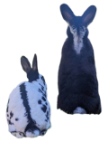

Tired of sorting through tonnes of CVs from candidates who over promise?
I'm a motivated newcomer to tech, eager to learn and grow alongside your team. Think of me as your next
investment,
or
as some easy HR tick boxes:
gender diversity
neurodiversity
religious diversity
intersectionality
About Me
I'm new to software development, but I have years of experience polishing digital content. From e-books to
food
packaging, I've honed an eye for detail and quality.
Now, I'm excited to apply my skills to create meaningful, user-friendly digital experiences.
I'm a curious learner with a positive attitude. And my love for languages will never go out of style. 💅
While my formal journey in software development is just starting, I bring years of experience ensuring
digital
content shines; from proofreading e-books and food packaging to formatting
multilingual documents and managing asset handovers. Detail and quality is important to me.
Now, I'm switching careers and applying my skills to the world of software development. My goal is to craft
digital experiences that are not only meaningful and impactful but also boast functional, and
user-friendly interfaces.
As a naturally curious learner, I embrace challenges with a positive attitude. And, my love for languages is
a
skill that will never go out of style 💅.
My Learning Journey 🌱
Curious to see what I've been up to?
This section offers a glimpse into my projects, and to help you find what you're looking for, I've added some
fun buttons:
or you can simply
Front-End Development
Languages & Frameworks:
React
Next.js
HTML
CSS (inc. Tailwind CSS)
JavaScript
Design & Prototyping
Figma
Adobe XD
Adobe Illustrator
Adobe Photoshop
Back-End Development
Languages & Frameworks:
Node.js
Express
PHP
Python
Database Management
PostgreSQL
SQL
Testing & Deployment
Testing:
Vitest
Playwright
Selenium
CI/CD:
GitHub Actions
Git (version control)
Thanks for checking out my portfolio!
I'm currently on the hunt for my first developer role, and I'm also happy to collaborate on projects to
develop my skills.
If you're feeling my energy, let's connect on LinkedIn!

Whoa, that's a HUGE screen! 🤯
You're gonna need to shrink that browser window way down to see this portfolio in its full
glory. (Psst...
it's
optimised for mobile. 😉)
¡Vaya, esa pantalla es ENORME! Tendrás que reducir MUCHO el tamaño de la ventana de tu
navegador para ver este portafolio en todo su esplendor. (Psst... está optimizado para celulares.)
Ouah, quel grand écran ! S'il te plaît, réduire considérablement la taille de ton navigateur
pour voir mon portfolio! (il est optimisé pour mobile.)
سكرينك كبير جدًا! 🌸 صغر من فضلك
안녕하세요!
Your screen is too big...
My portfolio is a bit like my rabbits – it prefers cozy spaces. Shrink your browser some more,
and you'll see
what I mean!
Mi portafolio es como mis conejos, prefiere espacios acogedores.
¡Reduce tu navegador y verás a qué me refiero!
Mon portfolio est un peu comme mes lapins - il préfère les espaces
confortables. Réduisez ton navigateur, et tu verras ce que je veux dire !
سكرينك كبير جدًا! 🌸 صغر من فضلك
안녕하세요!
Your screen is too big!
Did you know rabbits can see almost 360 degrees? 🐰 This portfolio isn't quite that flexible
yet, but we're
getting there. Shrink your browser just a tad more!
¿Sabías que los conejos pueden ver casi 360 grados? 🐰 Este
portafolio
aún no es tan flexible, pero estoy en ello. ¡Reduce tu navegador un poquito más!
Tu sais que les lapins peuvent voir à presque 360 degrés ? 🐰 Ce
portfolio
n'est pas encore aussi flexible, mais on y travaille. Réduisez encore un peu ta navigateur !
سكرينك كبير جدًا! 🌸 صغر من فضلك
안녕하세요!
Almost perfect screen size!
Just a tiny bit smaller... like a bunny nose twitch! 🐇 You're almost at the ideal size to
experience this
portfolio.
Solo un poquito más pequeño... ¡como una nariz de conejo moviéndose! 🐇 Ya casi
estás en el tamaño ideal para disfrutar de mi portafolio.
Juste un peu plus petit... comme un petit mouvement de nez de un lapin
!
🐇 Tu es presque à la taille idéale pour enjoyer mon portfolio.